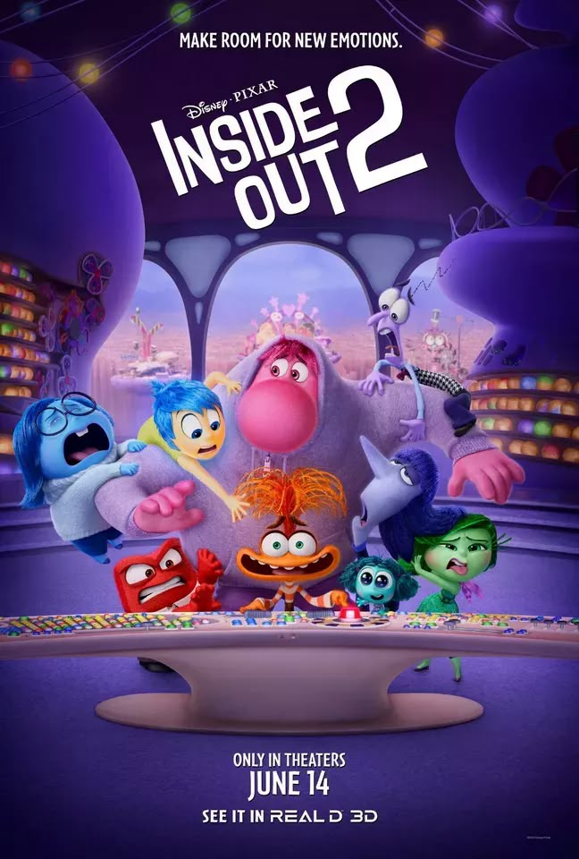

Intensamente 2
Calificación: ⭐⭐⭐⭐ (4/5)
Fecha de estreno: 14 de junio de 2024
Duración:1h 35m
Sinopsis: Ahora que es adolescente, Riley experimenta nuevos asentimientos como Ansiedad y Envidia, que se imponen a los viejos mientras ella duda sobre si abandonar a sus antiguas amigas por otras de la escuela secundaria.